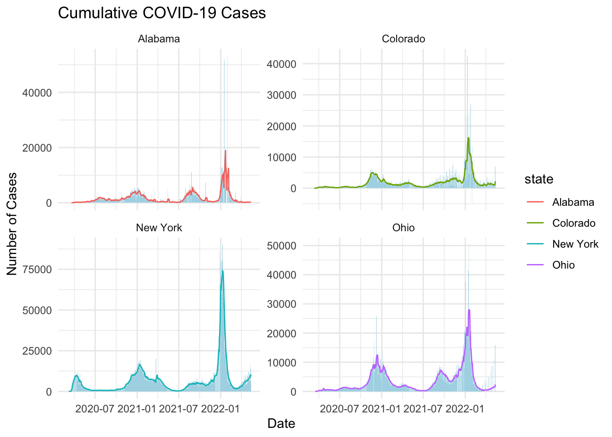
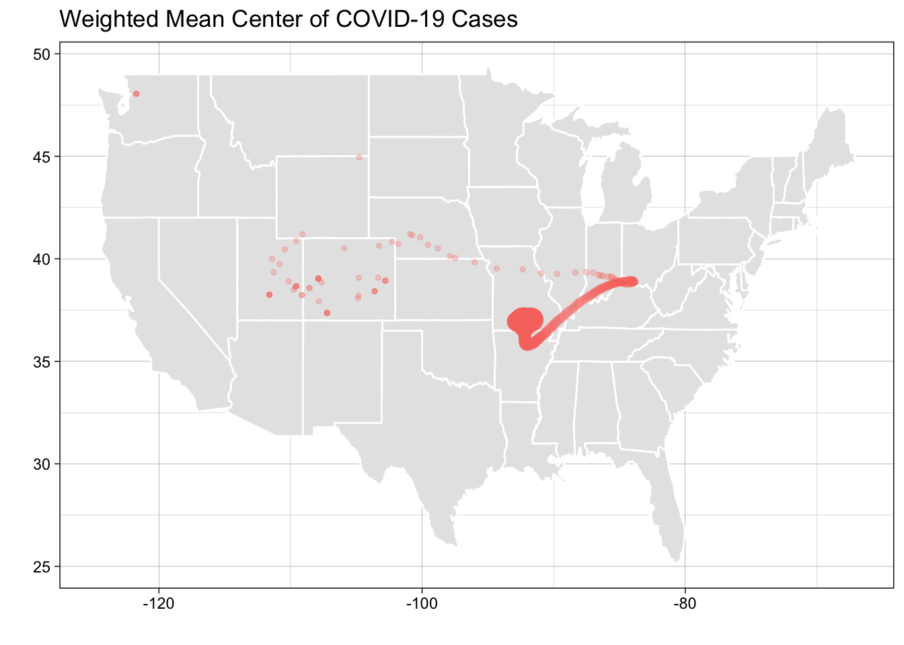

── Attaching core tidyverse packages ──────────────────────── tidyverse 2.0.0 ──
✔ dplyr 1.1.4 ✔ readr 2.1.5
✔ forcats 1.0.0 ✔ stringr 1.5.1
✔ ggplot2 3.5.1 ✔ tibble 3.2.1
✔ lubridate 1.9.4 ✔ tidyr 1.3.1
✔ purrr 1.0.2
── Conflicts ────────────────────────────────────────── tidyverse_conflicts() ──
✖ purrr::compose() masks flextable::compose()
✖ dplyr::filter() masks stats::filter()
✖ dplyr::lag() masks stats::lag()
ℹ Use the conflicted package (<http://conflicted.r-lib.org/>) to force all conflicts to become errors
library(zoo)
Attaching package: 'zoo'
The following objects are masked from 'package:base':
as.Date, as.Date.numeric
library(ggplot2)
Question 1
## Easy access to environmental data is critical to help inform the public on past and current trends in a variety of fields. It provides people with unbiased, scientifically backed information. When this data disapears, it creates room for misinformation to spread and potentially cause a lot of harm to the general public. url ='https://raw.githubusercontent.com/nytimes/covid-19-data/master/us-counties.csv'covid_data =read_csv(url)
Rows: 2502832 Columns: 6
── Column specification ────────────────────────────────────────────────────────
Delimiter: ","
chr (3): county, state, fips
dbl (2): cases, deaths
date (1): date
ℹ Use `spec()` to retrieve the full column specification for this data.
ℹ Specify the column types or set `show_col_types = FALSE` to quiet this message.
colorado %>%filter(date == my.date) %>%slice_max(cases, n =5) %>%select(Date = date, County = county, Cases = new_cases) %>%flextable() %>%set_caption("Most New Cases")
Rows: 3195 Columns: 67
── Column specification ────────────────────────────────────────────────────────
Delimiter: ","
chr (5): SUMLEV, STATE, COUNTY, STNAME, CTYNAME
dbl (62): REGION, DIVISION, ESTIMATESBASE2020, POPESTIMATE2020, POPESTIMATE2...
ℹ Use `spec()` to retrieve the full column specification for this data.
ℹ Specify the column types or set `show_col_types = FALSE` to quiet this message.
pop <- pop_data %>%filter(COUNTY !=0) %>%mutate(fips =paste0(sprintf("%02s", STATE), sprintf("%03s", COUNTY))) %>%select(fips, contains('NAME'), contains('2021'))## The data set has 3,195 rows and 19 columns. The column names include fips, STNAME, CTYNAME, POPESTIMATE2021, NPOPCHG2021, etc. The data has been filtered to only include columns that contain NAME and 2021. The data set matches the covid data with the fips column, and although the names are different, both sets include county and state columns as well.names(pop)
joined_data <- colorado %>%inner_join(pop, colorado, by ='fips') %>%mutate(per_capita_cumulative_cases = cases/POPESTIMATE2021,per_capita_new_cases = new_cases/POPESTIMATE2021,per_capita_new_deaths = deaths/POPESTIMATE2021)table1 <- joined_data %>%filter(date =="2021-01-01") %>%arrange(desc(per_capita_cumulative_cases)) %>%slice(1:5) %>%select(County = county, Cases = per_capita_cumulative_cases) %>%flextable() %>%set_caption("Top 5 Counties with Most Cumulative Cases Per Capita")table1
County
Cases
Crowley
0.28945074
Bent
0.21090092
Logan
0.15467009
Lincoln
0.14306596
Fremont
0.09507078
table2 <- joined_data %>%filter(date =="2021-01-01") %>%arrange(desc(per_capita_new_cases)) %>%slice(1:5) %>%select(County = county, Cases = per_capita_new_cases) %>%flextable() %>%set_caption("Top 5 Counties with Most New Cases Per Capita")table2
County
Cases
Bent
0.016669788
Sedgwick
0.003439381
Chaffee
0.002634112
Crowley
0.002266783
Mineral
0.002152853
Question 4
last_14_days <- joined_data %>%filter(date >=max(date) -14)counties_sum <- last_14_days %>%group_by(county) %>%summarize(total_cases =sum(cases, na.rm =TRUE), population =first(POPESTIMATE2021)) %>%ungroup() %>%mutate(cases_per_100k = (total_cases / population) /100000) top_5_counties <- counties_sum %>%slice_max(cases_per_100k, n =5) %>%select(County = county, Cases = cases_per_100k)table3 <-flextable(top_5_counties) %>%set_caption("Top 5 Counties by New Cases Per 100,000")table3
County
Cases
Crowley
0.00008737402
Bent
0.00007160517
Lincoln
0.00005989403
Pitkin
0.00005732826
Logan
0.00005327954
watchlist <-sum(counties_sum$cases_per_100k >100, na.rm =TRUE)cat("Number of counties meeting watch list condition:", watchlist)
Number of counties meeting watch list condition: 0
`summarise()` has grouped output by 'fips'. You can override using the
`.groups` argument.
annual_deaths <- pop %>%select(fips, POPESTIMATE2021) %>%mutate(annual_deaths = POPESTIMATE2021 *0.0087)death_ratio <- covid_2021 %>%left_join(annual_deaths, by ="fips") %>%mutate(death_ratio = total_covid_deaths / annual_deaths) %>%filter(death_ratio >=0.2) %>%slice(1:20)ggplot(death_ratio, aes(x =reorder(county, death_ratio), y = death_ratio *100)) +geom_bar(stat ="identity", fill ="red") +coord_flip() +labs(title ="Counties Where COVID Deaths Account for 20% or More of Annual Death Toll (2021)",x ="County",y ="Percentage of Annual Deaths") +theme_minimal()
`summarise()` has grouped output by 'date'. You can override using the
`.groups` argument.
ggplot(state_cases, aes(x = date)) +geom_col(aes(y = new_cases), fill ="lightblue", col =NA) +geom_line(aes(y = rolling_mean, color = state)) +facet_wrap(~ state, nrow =2, scales ="free_y") +labs(title ="Cumulative COVID-19 Cases",x ="Date",y ="Number of Cases") +theme_minimal()
Warning: Removed 4 rows containing missing values or values outside the scale range
(`geom_col()`).
Warning: Removed 28 rows containing missing values or values outside the scale range
(`geom_line()`).

state_pop <- pop %>%group_by(STNAME) %>%summarise(total_population =sum(POPESTIMATE2021)) %>%inner_join(state_cases, by =c("STNAME"="state")) %>%mutate(per_capita_cases = (new_cases/total_population)) %>%group_by(STNAME) %>%mutate(roll = zoo::rollmean(per_capita_cases, k =7, fill =NA, align ="right")) %>%ungroup()ggplot(state_pop, aes(x = date)) +geom_line(aes(y = roll, col = STNAME)) +labs(title ="7-Day Rolling Average of COVID Cases",x ="Date",y ="Cases") +theme_minimal()
Warning: Removed 28 rows containing missing values or values outside the scale range
(`geom_line()`).
# Scaling the populations by state impacted the analysis in several ways. States like Alabama and Colorado had low case numbers originally, but now have case numbers similar to New York and Ohio. The spike around 2022-01 remains the same for both graphs, but the spikes in the population scaled graph are much higher.
Rows: 3221 Columns: 3
── Column specification ────────────────────────────────────────────────────────
Delimiter: ","
chr (1): fips
dbl (2): LON, LAT
ℹ Use `spec()` to retrieve the full column specification for this data.
ℹ Specify the column types or set `show_col_types = FALSE` to quiet this message.
Joining with `by = join_by(fips)`
ggplot(centroid_data) +borders("state", fill ="gray90", colour ="white") +geom_point(aes(x = mean_LON, y = mean_LAT, color ="red", size = total_cases), alpha =0.25) +theme_linedraw() +labs(title ="Weighted Mean Center of COVID-19 Cases",x ="",y ="",color ="Month",size ="Total Cases") +theme(legend.position ="none")

# The movement of the COVID-19 weighted mean shows a heavy central case count around Arkansas and Missouri, and then it slowly fades as you go to the west and east coasts. Some possible drivers for this pattern include limited rural access to healthcare and lack of COVID-19 safety policies, both of which are more common in the Midwest.
Rows: 3221 Columns: 3
── Column specification ────────────────────────────────────────────────────────
Delimiter: ","
chr (1): fips
dbl (2): LON, LAT
ℹ Use `spec()` to retrieve the full column specification for this data.
ℹ Specify the column types or set `show_col_types = FALSE` to quiet this message.